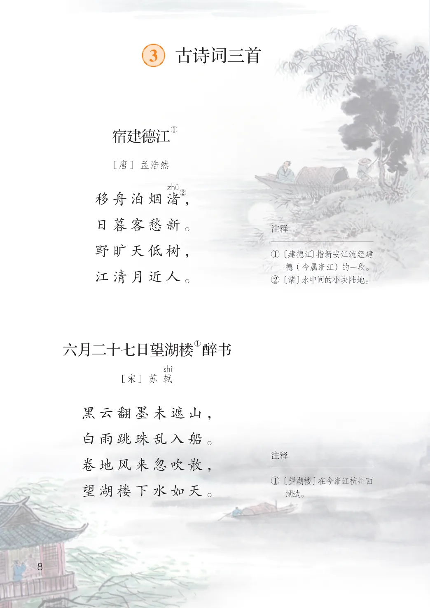
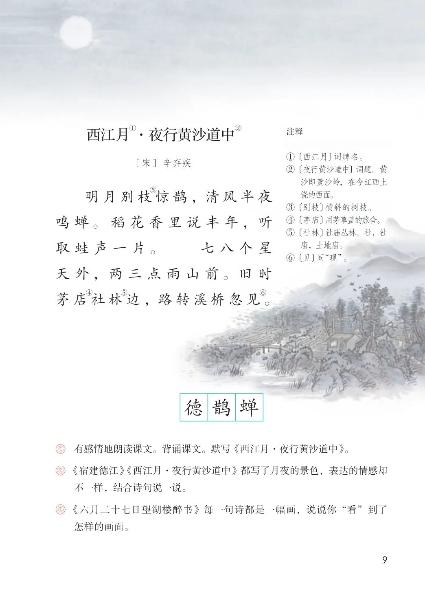

第一单元 · 第 3 课
古诗词三首
文字内容 PDF 第 13 页
①
宿建德江
[唐] 孟浩然
②
移舟泊烟渚，
日暮客愁新。
文字内容 PDF 第 14 页
①·夜行黄沙道中②
西江月注释
① 〔西江月〕词牌名。② 〔夜行黄沙道中〕词题。黄
[宋] 辛弃疾
沙即黄沙岭，在今江西上饶的西面。③ 〔别枝〕横斜的树枝。④ 〔茅店〕用茅草盖的旅舍。⑤ 〔社林〕社庙丛林。社，社
③
明月别枝惊鹊，清风半夜
鸣蝉。稻花香里说丰年，听
取蛙声一片。七八个星庙，土地庙。⑥ 〔见〕同“现”。
天外，两三点雨山前。旧时
④⑤⑥
茅店社林边，路转溪桥忽见。
生字与词语
德
鹊
蝉
课后练习
- 有感情地朗读课文。背诵课文。默写《西江月·夜行黄沙道中》。《宿建德江》《西江月·夜行黄沙道中》都写了月夜的景色，表达的情感却不一样，结合诗句说一说。
- 《六月二十七日望湖楼醉书》每一句诗都是一幅画，说说你“看”到了怎样的画面。
原版对照
原书页面与全部插图
点击图片可查看大图。

